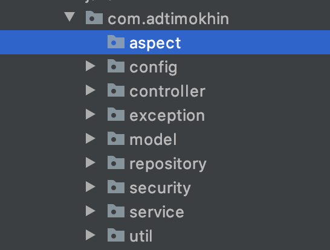

AOP and Spring AOP
Imagine that you want to have a shared functionality in many methods. Say, you want to log every method in your program. Would you want to waste your time to go to every method to write the same lines of code?
Usually we don’t want to waste time duplicating the code that adds nothing to the methods’ execution (like logging). To add functionality to every method without writing any additional code into them we use AOP.
What is AOP?
AOP stands for “Aspect-Oriented Programming”. It is a paradigm that is based on around aspects.
You might be asking yourself: “Hey, what are those aspects you are talking about?”. Patience my friends. In a few minutes you will find the answer.
Say you want to have a special class that will be used to add the following lines into your log files:
Class named [...] was initialized with parameters [...] <- this statement you want to write before the execution of a method.
Class named [...] returned value [...] <- this statement you want to add after the method’s execution.
Aspect is that class that you can use to perform this logging action before, during and after the method’s execution.
Aspect can perform any action, but most commonly we log with it. Let’s try to create an aspect that will log the start and the end of all service methods we’ve made so far.
Let’s waste no time and start writing our aspects!
Step One: Dependencies
Whole Spring AOP can be found inside this dependency>.
Spring also makes use of an AOP library (that provides AOP functionality) called AspectJ.
In order to work with AspectJ, Spring needs this dependency.
Do the following:
- Add required dependencies
pom.xml
<!--
... -->
<!--AOP-->
<dependency>
<groupId>org.springframework</groupId>
<artifactId>spring-aop</artifactId>
<version>${spring.version}</version>
</dependency>
<dependency>
<groupId>org.aspectj</groupId>
<artifactId>aspectjweaver</artifactId>
<version>1.9.7</version>
<scope>runtime</scope>
</dependency>
<!--
... -->
Step Two: Configuration
This is going to be the simplest configuration we have done so far. All we need is to tell Spring that we want to enable AOP by using the AspectJ library.
Do the following:
- Create new AspectConfig class
- Add @EnableAspectJAutoProxy annotation
- Don’t forget to connect this config to the dispatcher servlet
AspectConfig.class:
@Configuration
@EnableAspectJAutoProxy
public class AspectConfig {
}
WebAppInitializer.class:
@Order (1)
public class WebAppInitializer extends AbstractAnnotationConfigDispatcherServletInitializer {
// ...
@Override
protected Class<?>[] getServletConfigClasses () {
return new Class[]{WebConfig.class, PersistenceConfig.class,
SecurityConfig.class, EmailConfig.class, AspectConfig.class};
}
//
}
And that’s it!!
Step Three: Writing Aspect class
All AOP magic happens in Aspects. This is a simple class that is annotated with @Aspect annotation.
I think we should create one aspect where we will perform logging actions in our application.
Do the following:
- Create a new package “aspect”. There you will be storing all of your aspects
- Inside that packet create new class LoggingAspect
- Annotate that class with @Aspect
Folder hierarchy:
LoggingAspect.class:
@Aspect
public class LoggingAspect {
}
Inside any aspect you will find methods that will be invoked before/during/after execution of different methods.
In order to create such methods let’s get familiar with some terminology.
AOP Terminology
Aspect
We already talked about what aspects are. They are classes that allow to perform some functionality when certain methods are at certain points of their execution cycle (e.g. only starting or already finishing)
Advice
Advice is what actually contains the aspect’s code to run. In the OOP equivalent, aspects are classes and advice are methods.
Joinpoint
This is a point in execution of your program (like method) where you can execute this additional code you’ve made in the aspect (i.e advice).
Pointcut
Pointcut tells the program in which joinpoints you call which aspect’s methods (advices).
To be honest, it took me a very long time to understand what each of these things are. Hopefully, the code examples below will help you to get your head around this quicker.
Writing advices and pointcuts
Don’t try to run the code that you will see in this section until you reach the next step.
Let’s create a pointcut that will be used to group together all methods inside the service classes:
LoggingAspect.class:
@Aspect
public class LoggingAspect {
@Pointcut ( /** Here we will tell which methods we want to log
* (in other words - what methods this pointcut should group) **/)
public void logAllServiceMethods () {
}
}
Pointcut method should not return anything.
To refer to a pointcut in the aspect class we need to use the name of the pointcut’s method. In this case - logAllServiceMethods().
This is one way of creating advices:
LoggingAspect.class:
@Aspect
public class LoggingAspect {
@Pointcut ()
public void logAllServiceMethods () {
}
@Before ("logAllServiceMethods()")
public void logAllMethodsBeforeExecution ()
}
}
You see that we have used @Before annotation. Advices come in different types:
- @Before - called before the joinpoint( the execution of the method that we want to log)
- @After - called after the joinpoint (the execution of the method that we want to log)
- @AfterReturning - called after the execution of a method that we log that returns a value
- @AfterTrowing - called after throwing an exception
- @Around - this aspect will be called instead of running the method. I will show you how to use that in a second
I will give examples of each advice type below. They will only be used as examples, and you don’t have to copy them to your program.
Before Advice
LoggingAspect.class:
@Aspect
public class LoggingAspect {
// ...
private final static Logger logger = LoggerFactory.getLogger(LoggingAspect.class ) ;
@Before ("logAllServiceMethods()")
public void logAllMethodsBeforeExecution (JoinPoint joinPoint)
// In this case joinPoint is a method that will be called after execution of this advice.
Signature signature = joinPoint.getSignature() ; // this is the method's signature
String methodName = signature.getName() ; // this is method's name
logger.trace("Method {} was called", methodName) ;
}
}
Notice how in the advice’s parameters we set an object of JoinPoint. This JoinPoint is the method that will be executed as soon as the code for the advice will be executed.
After Advice
LoggingAspect.class:
@Aspect
public class LoggingAspect {
// ...
private final static Logger logger = LoggerFactory.getLogger(LoggingAspect.class ) ;
@After ("logAllServiceMethods()")
public void logAllMethodsAfterExecution (JoinPoint joinPoint)
Signature signature = joinPoint.getSignature() ; // this is the method's signature
String methodName = signature.getName() ; // this is method's name
logger.trace("Method {} has been terminated", methodName) ;
}
}
AfterReturning Advice
LoggingAspect.class:
@Aspect
public class LoggingAspect {
// ...
private final static Logger logger = LoggerFactory.getLogger(LoggingAspect.class ) ;
@AfterReturning (pointcut = "logAllServiceMethods()", returning = "returnValue")
public void logAllMethodsAfterReturning (JoinPoint joinPoint, Object returnValue)
Signature signature = joinPoint.getSignature() ; // this is the method's signature
String methodName = signature.getName() ; // this is method's name
logger.trace("Method {} returned {}", methodName, returnValue.toString()) ;
}
}
Note that when you expect to have a returned value you have to specify the name by which you will refer to it in the annotation. You will also need to add the returned value with the same name to the method’s (advice’s) arguments.
AfterThrowing Advice
LoggingAspect.class:
@Aspect
public class LoggingAspect {
// ...
private final static Logger logger = LoggerFactory.getLogger(LoggingAspect.class) ;
@AfterThrowing (pointcut = "logAllServiceMethods()"", throwing = "exception")
public void logAllMethodsAfterExceptionThrowing (JoinPoint joinPoint, Throwable exception) {
Signature signature = joinPoint.getSignature() ; // this is the signature of the method
String methodName = signature.getName() ; // this is the name of the method
logger.error("Method {} triggered an exception: {}", methodName, exception.getMessage());
}
}
AfterThrowing Advice is very similar to AfterReturning Advice. But in the AfterThrowing Advice we have to create a variable for an exception (an object of class Throwable) that we want to catch.
Around Advice
LoggingAspect.class:
@Aspect
public class LoggingAspect {
// ...
private final static Logger logger = LoggerFactory.getLogger(LoggingAspect.class) ;
@Around ("logAllServiceMethods()")
public void logAllMethodsAroundExecution (ProceedingJoinPoint joinPoint) throws Throwable {
// ProceedingJoinPoint is a joinPoint that was not yet executed.
// In this advice you must trigger its execution.
// Before JointPoint is initialised:
String methodName = joinPoint.getSignature().getName();
logger.trace("Method {} is about to be executed", methodName);
long timeBeforeExecution = System.currentTimeMillis() ;
// Triggering the execution of the JoinPoint:
joinPoint.proceed() ;
// After JoinPoint was executed:
logger.trace("Method {} was executed", methodName);
long timeAfterExecution = System.currentTimeMillis() ;
long timeOfExecution = timeAfterExecution - timeBeforeExecution;
logger.trace("Method {} took {} ms to execute", methodName, timeOfExecution);
}
}
Around advice allows us to execute some actions before JoinPoint execution and then to perform other actions after JoinPoint was executed. In this example, the advice calculates the time it takes to run the method.
Let’s create an advice that we will use in our real application.
I think we'll need three Advice:
1) Around Advice that will log the start and finish of the joinpoint execution. It will also tell us how many milliseconds it took to execute the joinpoint
2) AfterThrowing Advice that will log any errors that will be thrown
3) AfterReturning Advice that will log the returned value of each method
This is how we may approach creating these Advice:
LoggingAspect.class:
@Aspect
public class LoggingAspect {
// ...
private final static Logger logger = LoggerFactory.getLogger(LoggingAspect.class) ;
// 1)
@Around ("logAllServiceMethods()")
public void logAllMethodsAroundExecution (ProceedingJoinPoint joinPoint) throws Throwable {
// ProceedingJoinPoint is a joinPoint that was not yet executed.
// In this advice you must trigger its execution.
// Before JointPoint is initialised:
String methodName = joinPoint.getSignature().getName();
logger.trace("Method {} is about to be executed", methodName);
long timeBeforeExecution = System.currentTimeMillis() ;
// Triggering the execution of the JoinPoint:
joinPoint.proceed() ;
// After JoinPoint was executed:
logger.trace("Method {} was executed", methodName);
long timeAfterExecution = System.currentTimeMillis() ;
long timeOfExecution = timeAfterExecution - timeBeforeExecution;
logger.trace("Method {} took {} ms to execute", methodName, timeOfExecution);
}
// 2)
@AfterThrowing (pointcut = "logAllServiceMethods()", throwing = "exception")
public void afterThrowingAdviceLogsError (JoinPoint joinPoint, Throwable exception) {
Signature signature = joinPoint.getSignature() ; // this is the signature of the method
String methodName = signature.getName() ; // this is the name of the method
logger.error("Method {} triggered an exception: {}", methodName, exception.getMessage());
}
// 3)
@AfterReturning (pointcut = "logAllServiceMethods()", returning = "returnVal")
public void afterReturningLogAllServiceMethods (JoinPoint joinPoint, Object returnVal) {
Signature signature = joinPoint.getSignature() ; // this is the signature of the method
String methodName = signature.getName() ; // this is the name of the method
// I want to display full information about the User, if User is returned
if (User.class.equals(returnVal.getClass())) {
logger.debug("Method {} had returned User with parameters: {}" + methodName, ((User) returnVal).getInfo());
}else{ // or otherwise display standart message
logger.debug("Method {} returned object of class {}:{}" , methodName, returnVal.getClass().getName() , returnVal);
}
}
}
This pretty much concludes the advice options.
Back to Pointcut
We will have a look at our point cut once again:
LoggingAspect.class:
@Aspect
public class LoggingAspect {
@Pointcut ( /** Here we will tell which methods we want to log
* (in other words - what methods this pointcut should group) **/)
public void logAllServiceMethods () {
}
}
Does it tell which methods we should log? No!
Inside the parameters of the @Pointcut annotation we set the “rule”, if you like, for pointcut to find methods (or joinpoints) that we will then log with our advice.
The syntax for this rule is a weird one, not going to lie. It provides a lot of options on how to select certain joinpoints, but we are not going to go over all of them. As you start to use AOP, you will use primarily only one form of this syntax:
execution(access_modifier returned_type full.path.to.class.method_name(parameter_type))
Let me show you an example:
execution(public com.adtimokhin.model.User com.adtimokhin.service.impl.UserServiceImpl.findUser(String))
This statement will match only to a public method findUser() inside the UserServiceImpl class. This method should take in String and return User.
We can tell the pointcut which parts of this argument we don’t really care about - which can have any value.
So, say this pointcut statement below:
execution(* com.adtimokhin.service.impl.*(..))
This statement will be mapped to all joinpoints that:
- Have any access modifier and return any value (this is what this first asterisk represents)
- Is inside the com.adtimokhin.service.impl package
- Have any method name
- Have any parameters taken in (this is what these .. stands for)
You can play around with this statement in any way you like. For our logging purposes, however, this second pointcut statement is totally sufficient.
This is how you set the pointcut’s value:
LoggingAspect.class:
@Aspect
public class LoggingAspect {
@Pointcut("execution(* com.adtimokhin.service.impl.*(..))")
public void logAllServiceMethods () {
}
// ...
}
If you want to learn more about this syntax you can have a read online. I found an article that I think summarizes everything very well.
Also I want to mention that advice annotations that we’ve used above can also have some weird syntax: we can set parameters for our advice. You will probably won’t need it for logging your application, but if you want to learn about it here is the link to the Spring documentation.
Extra feature
What if you need only one advice for a single pointcut? You can combine pointcut and advice like this:
LoggingAspect.class:
@Aspect
public class LoggingAspect {
// ...
@Before("execution(* com.adtimokhin.controller.*(..))")
public void beforeEachControllerMethod (JoinPoint joinPoint)
// In this case joinPoint is a method that will be called after execution of this advice.
Signature signature = joinPoint.getSignature() ; // this is the method's signature
String methodName = signature.getName() ; // this is method's name
logger.info("{} was called", joinPoint.getSignature().getName());
}
}
One last thing to mention
If you want to explore AOP even further, I advise you to start from reading through AspectJ documentation . I think that it is a good place to start.